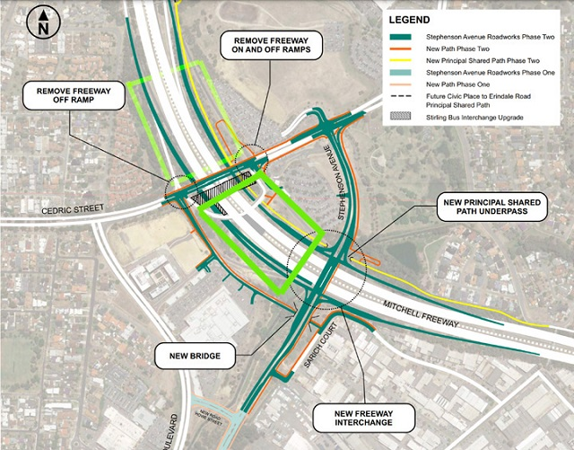

The Station Precinct updateThe Station Precinct Local Development Plan covers land around Stirling Station on both sides of the freeway. This area will see a major transformation and will be characterised by high rise mixed use buildings and residential areas around the Stirling Station.
The main problems for buildings on freeways are air pollution and noise, there is no 'safe' level for people living near freeways. There are quite a few examples (USA, Germany, Japan) where the airspace on freeways was used. I called City of Stirling on 29 July 2021 and was informed, there were no specific building development-plans available for train station-freeway area. At a Festival of Ideas (July 2009) I did discussed the concept 'building on top of freeways', and also later at Stirling City Centre Alliance (SCCA). However, this concept is not shown on the current plans, but is it worth to consider this idea? Yes it needs to be done 'now' before Main Roads start working on Phase two.
The coloured rectangular area shown in Figure below gives an indication of a possible a central open space, for community events and recreational activities. Whether it is possible will depend on negotiation with State/Local Government.  A cost effective solution connecting communities on both sides of the freeway would be building a bridge structure (having a light live load.) Any comments are appreciated. Please contact me if you are passionate to discuss this significant matter. Karl Boeing Email: click here |